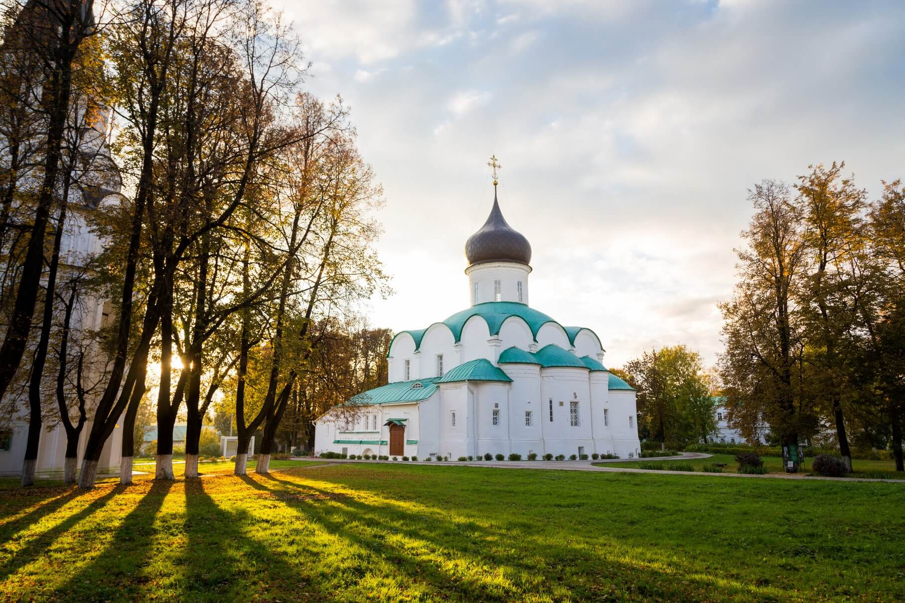

Александров
Александров — древний город на северо-западе Владимирской области, известный как резиденция Ивана Грозного, Александрова слобода, в которой сохранились интересные памятники XVI—XVII веков и творились важные события российской истории. Город находится на обоих берегах реки Серая, левого притока Шерны, которая, в свою очередь, впадает в Клязьму.

Прославило Александровскую слободу время Ивана Грозного. Начиная с 1565 года царь сделал слободу фактическим центром Русского государства более чем на 20 лет. Здесь расположилась основная царская резиденция, были построены грандиозные каменные храмы и палаты (деревянные и каменные), а вся территория нового царского двора была обнесена земляным валом с деревянным тыном.
Церковь Боголюбской иконы Божией Матери — православный храм в Александрове Владимирской области. Приход храма входит в состав Александровского благочиния Александровской епархии. Церковь построена в 1800 году. Храм выдержан в стиле классицизма. Храм построен в честь Боголюбской иконы Божией Матери, возведение храма на данном месте было обусловлено тем, что в городе появилось новое кладбище. Вскоре храм был обнесён каменной оградой, была построена каменная колокольня.